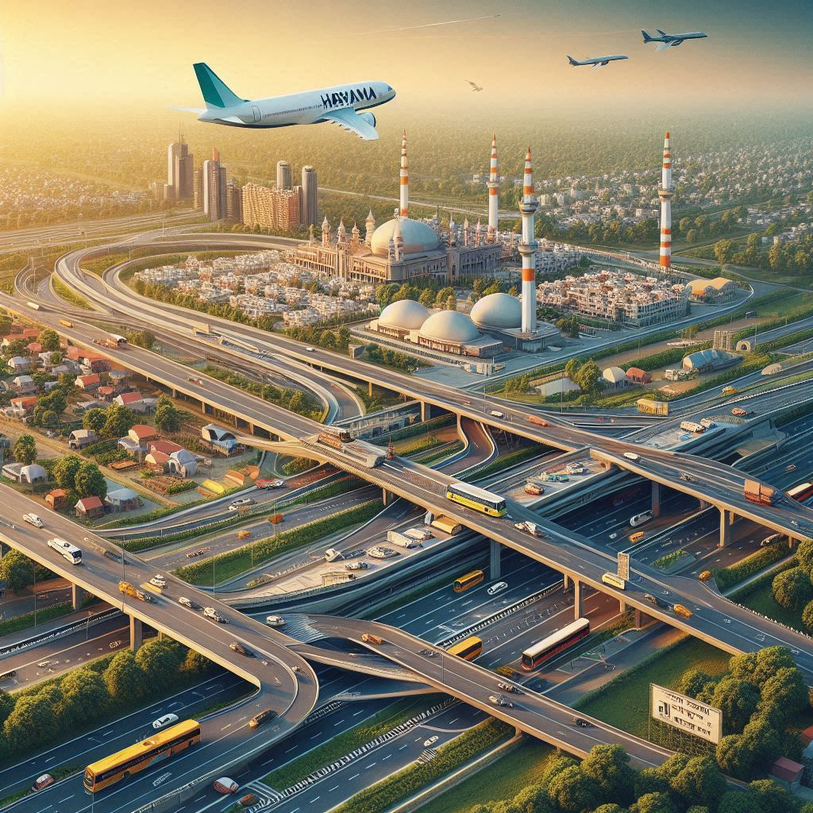
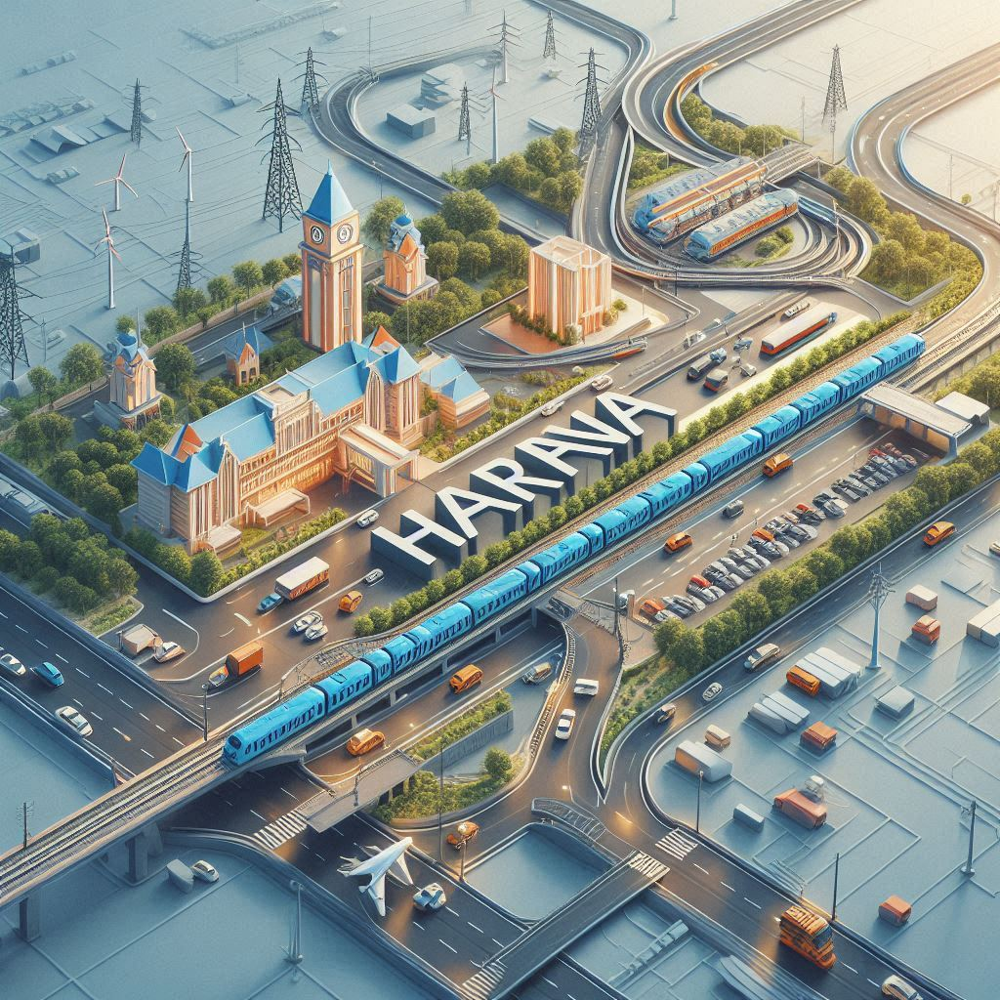

Haryana has a well-developed transportation network that facilitates connectivity within the state and with neighboring regions. The transportation system in Haryana includes roads, railways, and airports, catering to the needs of both urban and rural populations.
1. Road Transport
Haryana boasts a comprehensive road network, which is one of the most important modes of transport for the state:
- National Highways: Haryana is connected by major national highways, including NH-1 (connecting Delhi to Amritsar), NH-2 (Delhi to Kolkata), and NH-8 (Delhi to Mumbai). These highways provide easy access to other states in India.
- State Highways and Rural Roads: Haryana has an extensive network of state highways and rural roads, making it easy for people to travel within the state, especially in remote villages and towns.
- Bus Services: Haryana Roadways provides a vast network of bus services connecting major cities, towns, and villages within the state and with neighboring states. Private bus operators also run services on various routes, offering a variety of travel options.
- Taxis and Auto-Rickshaws: Taxis and auto-rickshaws are widely used for short-distance travel within cities and towns. Many app-based cab services like Ola and Uber also operate in Haryana, particularly in cities like Gurugram and Faridabad.
2. Rail Transport
- Railways: Haryana is well-connected to major cities across India through its extensive railway network. Key cities like Hisar, Ambala, Rohtak, and Panipat are important railway stations in the state, serving as major hubs for both passenger and freight transport. The Delhi-Kolkata and Delhi-Mumbai rail routes pass through Haryana, connecting it to other parts of India.
- Metro Services: The Delhi Metro network extends into Haryana, particularly in Gurugram and Faridabad, making it convenient for commuters traveling between Haryana and Delhi.
3. Air Transport
- Indira Gandhi International Airport (Delhi): The nearest major international airport to Haryana is the Indira Gandhi International Airport in New Delhi, which is about 30 km away from Gurugram. This airport serves as a hub for both domestic and international flights.
- Domestic Airports: Haryana has an operational domestic airport at Chandigarh, the capital city of Haryana and Punjab. The Chandigarh International Airport provides connectivity to major cities across India, and plans are underway to expand its services.
- Helicopter Services: For quicker travel, especially in some rural or remote areas, helicopter services are available for VIPs and business travel.
4. Water Transport
- Haryana is not a coastal state, so it does not have seaports. However, it has a few canals and river routes that are used for small-scale transport, especially for freight. The Yamuna River is navigable in parts, though it is more commonly used for irrigation and water supply.


5. Cycling and Non-Motorized Transport
- In many rural areas, traditional modes of transport like bicycles, bullock carts, and cycle-rickshaws are still widely used. In urban areas, walking and cycling are also popular among the local population, especially for short-distance travel.
6. Conclusion
Haryana’s transportation system is a blend of modern and traditional modes, offering multiple options for intra-state and inter-state travel. With its extensive road network, railway connectivity, and proximity to the national capital, Haryana plays a crucial role in facilitating the movement of people and goods.